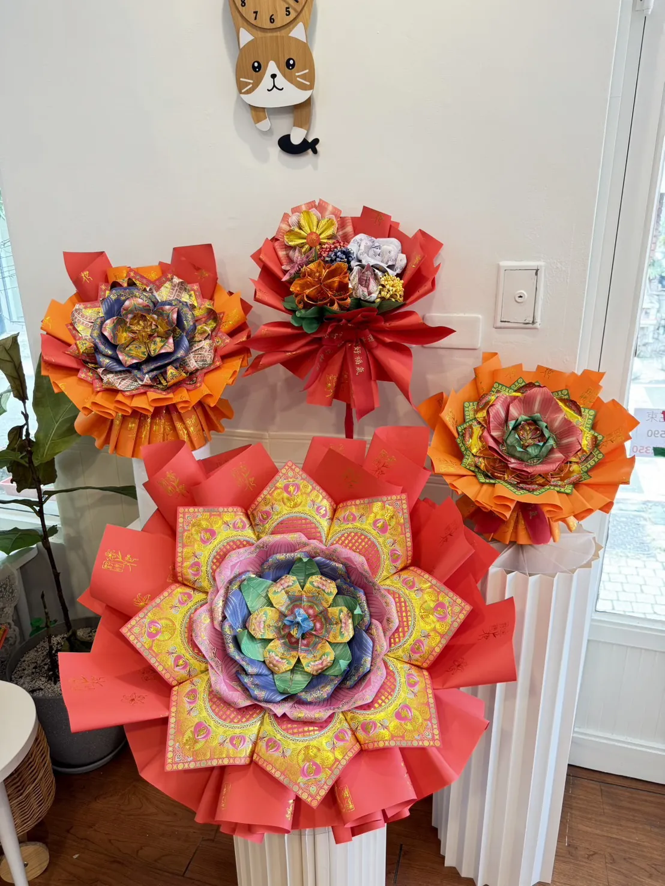

Haoshen Flower
好神花課程與作品
授權師資教學
好神花是獻給神明的供花作品，以金紙紙藝結構呈現莊重、細緻又能長久保存的祝福心意，作品具有專利設計，適合敬神供奉、祝壽祈福與節慶獻禮。
昌久貹主理人林韵媃持有好神花授權師資，師資編號 A49001，在台中、高雄開設好神花紙藝課程，也提供好神花作品訂製與販售。
查看課程資訊 LINE 洽詢
授權師資教學
由持有好神花授權師資的主理人林韵媃授課，依正式課程內容帶領學員理解材料、結構與作品細節，學習更安心。
台中高雄開課
好神花課程於台中、高雄皆有安排梯次，新手可學，從基礎步驟到作品完成，適合想學習供花紙藝與金紙文創的學員。
可延伸接單
完成課程後可持續練習作品細節，依能力延伸接單、客製供花、祝壽花禮與品牌經營，讓作品成為可被看見的專業。
好神花作品訂製服務
若暫時無法上課，也可洽詢昌久貹好神花作品販售與訂製服務。可依供奉對象、祝壽祈福用途、預算與交期討論作品方向，製作適合敬獻神明的金紙供花作品。
每一件好神花作品都會依用途細節溝通，讓供花不只是形式上的擺設，而是承載心意、敬意與祝福的紙藝作品。
Contact
好神花課程與作品洽詢
想了解好神花台中課程、高雄課程、授權師資教學、作品訂製或販售，都可以透過 LINE 與昌久貹聯繫。
回課程專區 加入 LINE 詢問